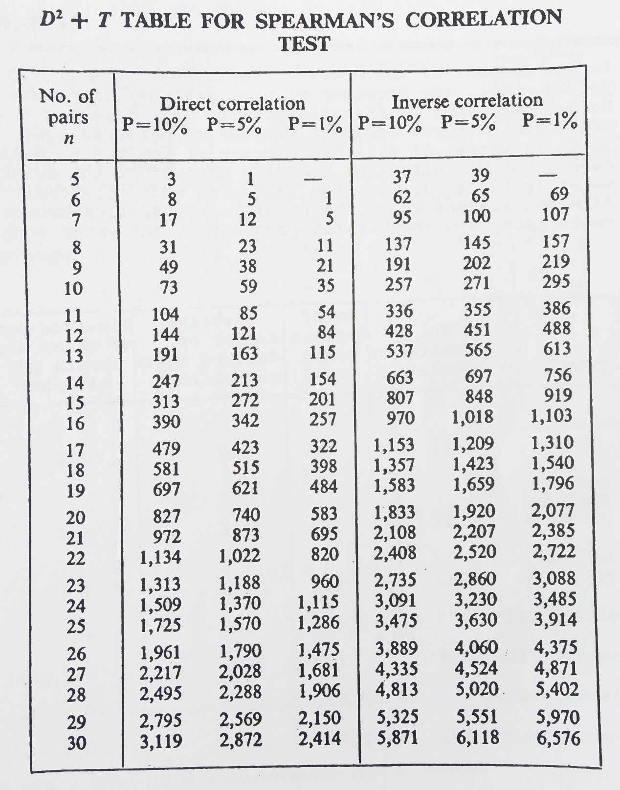
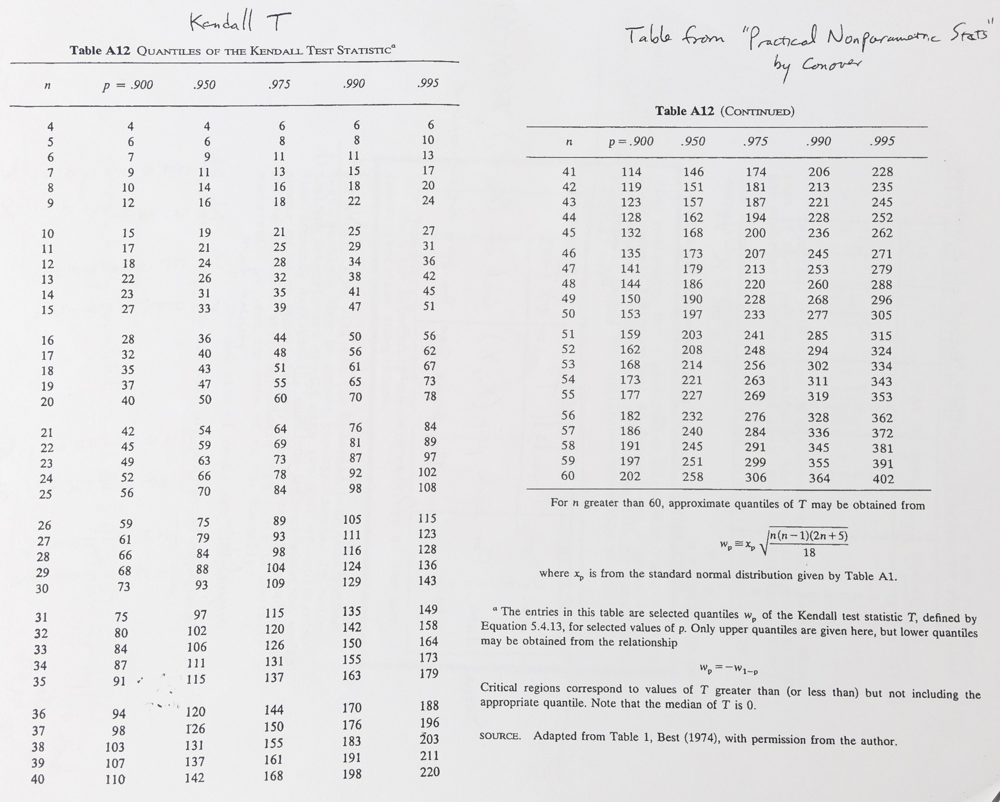

Nonparametrics
Terms:
- nonparametrics — tests (e.g.) which don't assume underlying distributions
- robust — insensitive to small deviations from assumed models
R Functions:
- ks.test(x,'distribution')
- cor.test(x, y, method="spearman")
- fisher.test(<matrix>)
EDF Tests
There are several tests which test the fit of an empirical distribution function (edf) to a specified cdf with predetermined parameters. These tests should not be used if testing the fit to a paramterically determined model.
Kolmogorov-Smirnov (KS) Test
Measures maximum distance between edf and model: \(M_{KS}=\sqrt{n}\max\limits_{x}|\hat{F}_n(x)-F_0(x)|\), and the critical value is \(M_{KS}^{crit} > (-\frac{1}{2}\ln(\frac{\alpha}{2}))^{1/2}\). A value of \(M_{KS}\) greater than the critical value signifies rejection of the null hypothesis that the edf and cdf are of the same distribution, at a significane level of α.
Cramér-von Mises (CvM) Statistic
Measures the sum of squared distances between the edf and a specified cdf: \(T_{CvM,n}=\frac{1}{12n}+\sum\limits_i^n(\frac{2i-1}{2n}-F(X_{(i)}))^2\).
Anderson-Darling (AD) Statistic
Addresses the problem that the differences between the edf and cdf get squeezed at the ends of the distribution, causing the KS and CvM tests to miss differences in the tails. the AD statistic is a weighted variant of the CvM statistic: \(A_{AD,n}^2=n\sum\limits_i^n\frac{[i/n-F_0(X_i)]^2}{F_0(X_i)(1-F_0(X_i)}\). This test tends to be more effective than the others.
Hypothesis Testing
Sign Test
If we have a guess for the median of a sequence of random variables, the sign statistic is the difference between the number of points greater than and less than the guess. If we only look at the number greater than the guess, this value follows a binomial distribution, which can be used to get critical values.
Mann-Whitney-Wilcoxon (MWW) Test
Also the Wilcoxon rank sum test, this tests whether two samples come from identical populations. The test merges and ranks the two samples, and the test staistic \(T_{MWW}\) is the sum of the ranks of the first sample. This statistic is asymptotically normal (use n greater than about 20) with mean \(\frac{m(n+m+1)}{2}\) and variance \(\frac{nm(n+m+1)}{12}\). The hypothesis of identicle distributions can then be tested with a z-score. If the samples have ties, we can assign the average rank value to the tied points, though this can result in bias.
Multivariate Tests
Spearman Rank Test
Tests two samples of paired observations for independence by taking the difference d between the rank in the first and second samples for each observation. The statistic \(D^2=\sum d^2\). If the samples have ties, then if \(t_x\) is the number of ties involving x elements, \(T=\sum\frac{x^3-x}{12}\). We can then use a \(D^2+T\) table to interpret the results.
Kendall τ Correlation Test
Counts concordant \(N_c\) and discordant \(N_d\) pairs: for a pair of observations in sample 1, if the order of their ranks agrees with their ranks sample 2, they are concordant; otherwise they are discordant. Then the statistic \(\tau_K=\frac{N_c-N_d}{N_c+N_d}\), and we can use a table to interpret it.
Contingency Tables
Fisher's Exact Test
Tests whether two variables of categorical data are independent. For a sample contingency table
| Male | Female | |
|---|---|---|
| tall | a=9 | b=3 |
| short | c=21 | d=17 |